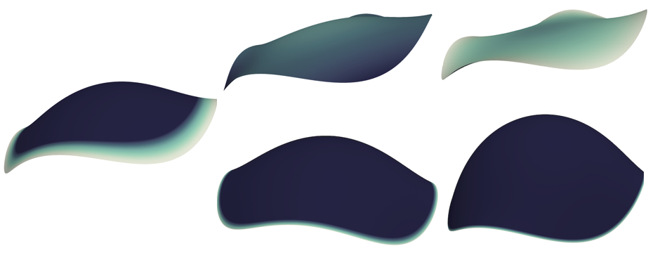

Curvature Functionals and p-Willmore Energy
 Naturally-encountered films and material surfaces often present themselves scientifically in accordance with physical conservation laws and least-action principles. In the language of mathematics, such surfaces are described as the minimizing critical points of a functional which depends on some quantity which is geometrically or topologically invariant. A notable example of this is given by the study of functionals which depend on the curvature of a surface, more specifically on its rigid-motion-invariant mean curvature \(H\) and Gauss curvature \(K\). This dependence on shape is seen in physical quantities such as the holographic entanglement entropy in string theory, the free energy in liquid crystallography, and the Helfrich energy of biomembranes. Moreover, the venerable Willmore energy (which is conformally-invariant and measures deviation from roundness) has attracted great mathematical interest for decades due to its connection to minimal surfaces in the 3-sphere \(\mathbb{S}^3\). Because so many interesting surface measurements depend on shape, it is worthwhile to have a more general framework for studying these curvature-dependent functionals as well. Indeed, such a framework can facilitate a greater analytical understanding of these objects, while also yielding mathematical tools that can be specified to a variety of significant quantities.
Some progress toward this goal has already been made. Inspired by the examples above and other previous work, our primary object of study in as of late has been the general curvature functional
\[\mathcal{F}_\mathcal{E}(\mathbf{r}) = \int_{\mathbf{r}(M)} \mathcal{E}(H,K)\, dS, \label{eq:genfunc}\]which depends on a smooth function \(\mathcal{E}\) and an immersion \(\mathbf{r}: M \to \mathbb{M}^3(k_0)\). Here, \(\mathbf{r}\) maps the abstract Riemannian surface \(M\) (possibly with boundary) into a 3-D space of constant sectional curvature \(k_0\), e.g. \(\mathbb{R}^3,\mathbb{S}^3,\mathbb{H}^3\). Note that every example discussed so far can be considered as a special case of \(\mathcal{F}_\mathcal{E}\).
To establish mathematical tools for studying general curvature functionals, (CF) provides closed-form expressions for the first and second variations of \(\mathcal{F}_\mathcal{E}\), which are given completely in terms of quantities derived from the surface fundamental forms. Since the fundamental forms give rise to the most basic geometric invariants of the immersion, these expressions provide accessible stability criteria that should be useful to both experts and non-experts, as an interested researcher can make use of the relevant partial differential equations using only basic information. In this way, the work in (CF) generalizes and supplements what is found in previous literature.
Further, (SS) considers the same basic object \(\mathcal{F}_{\mathcal{E}}\) with an increased emphasis on immersions of compact surfaces with nontrivial boundary. Motivated again by considerations from physics, the aim is to develop general tools for the study of these surfaces, as well as to determine how much the boundary of a \(\mathcal{F}_\mathcal{E}\)-critical surface can control the behavior of its interior. To this end, invariances of the functional are used to compute a conservation law which characterizes \(F_\mathcal{E}\)-critical surfaces, and various boundary-value problems are examined. Moreover, it is shown that the answer to the question of boundary versus interior behavior is highly dependent on the response of \(\mathcal{F}_\mathcal{E}\) to uniform surface dilations. In particular, it is seen that functionals which remain invariant under this action are (in some sense) significantly more rigid with respect to their critical surfaces, as a free-boundary \(\mathcal{F}_\mathcal{E}\)-critical surface which is rotationally-symmetric must either be spherical or satisfy very restrictive conditions on its first partial derivatives (c.f. SS Theorem 1.1). Note that this result also extends and recovers work done by Bennett Palmer for the Willmore functional.
On the other hand, functionals which are sensitive to surface rescaling are quite flexible, and it is more difficult to specify their critical surfaces using only boundary conditions. This perhaps offers a partial explanation for why it has historically been more difficult to obtain uniqueness results for boundary-value problems involving dilation-sensitive functionals e.g. the total mean curvature and Helfrich energies. Nevertheless, relevant boundary-to-interior consequences can be collected in this case as well, and some useful insights can be extracted. One such result demonstrated in (SS) gives information about functionals where \(\mathcal{E}=\mathcal{E}(H)\) is a real analytic function of \(H\) alone. Indeed, one sees that any critical surface \(M\) which satisfies Dirichlet zero boundary conditions on \(\mathcal{E}\) and its first-order derivatives either has constant mean curvature, or the function \(\mathcal{E}\) is severely restricted. In particular, if \(M\) is not CMC, then \(\mathcal{E}\) must be either identically \(0\) or some constant multiple of \(H^2\) (c.f. SS Corollary 6.3) – further highlighting the relevance of scale-invariance among functionals which depend on mean curvature.
A particularly noteworthy special case of \(\mathcal{F}_\mathcal{E}\) occurs when \(\mathcal{E}(H) = H^p\) for some \(p\geq 0\). This functional, known as the p-Willmore energy, is a signed extension of the “\(L^p\) curvature functional” idea recently investigated by Andrea Mondino and others. Though the p-Willmore energy seen presently cannot be considered as a norm on its domain, it has significant utility in connecting some important geometric functionals: namely the area, total mean curvature, and Willmore functionals which appear as \(p = 0,1,2\), respectively. Applied to this case, the results for general curvature functionals above yield some interesting consequences. For one, it follows that round spheres are not minimizing for the p-Willmore energy when \(p>2\) (c.f. CF), though they are known to be globally minimizing in the case \(p=2\). Even more surprisingly, it is seen that if \(p>2\) and \(M\) is a p-Willmore critical surface satisfying \(H=0\) on its boundary, then \(M\) must in fact be minimal. This shows that there can be no closed p-Willmore surfaces when \(p>2\), and yields a connection to minimal surfaces that is worth exploring in future work.
Relevant Publications
(EP) Anthony Gruber, Álvaro Pámpano, Magdalena Toda. Regarding the Euler-Plateau Problem with Elastic Modulus (under review). Preprint version available here.
(SS) Anthony Gruber, Magdalena Toda, Hung Tran. Stationary surfaces with boundaries (under review). Preprint version available here.
(CF) Anthony Gruber,, Magdalena Toda, Hung Tran. On the variation of curvature functionals in a space form with application to a generalized Willmore energy, Ann. Glob. Anal. Geom. (2019) 56: 147. DOI:https://doi.org/10.1007/s10455-019-09661-0. Preprint version available here.